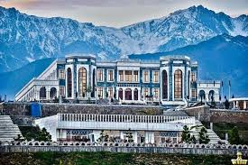
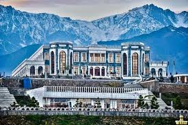
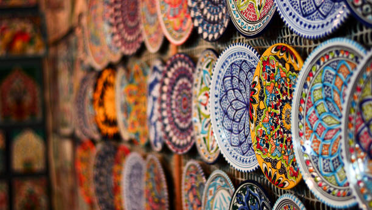
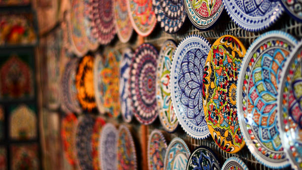
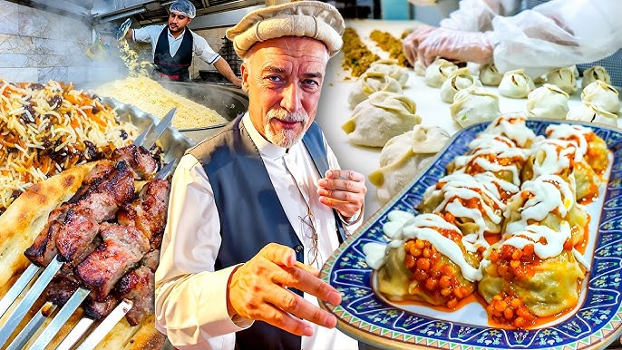
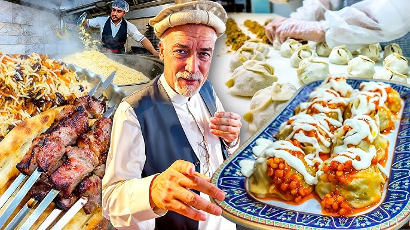
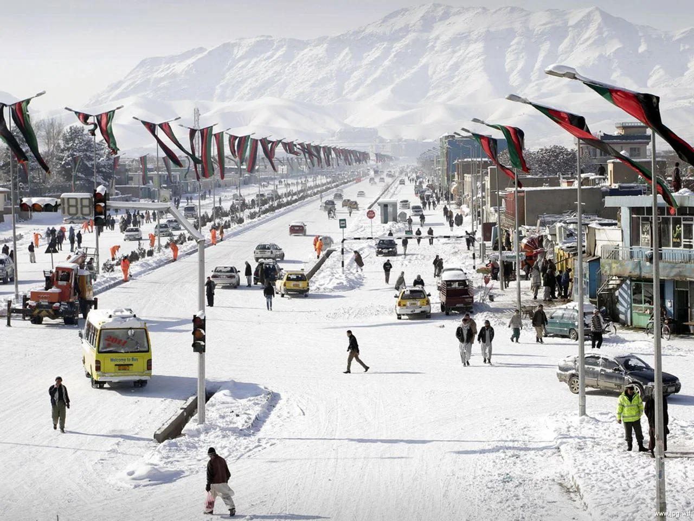
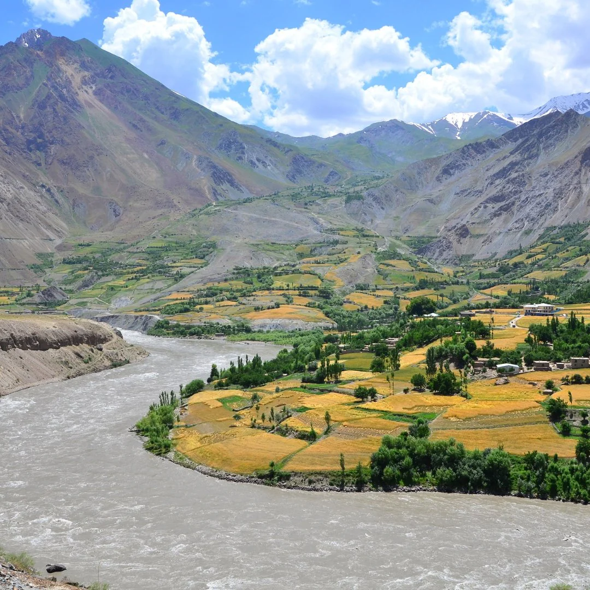
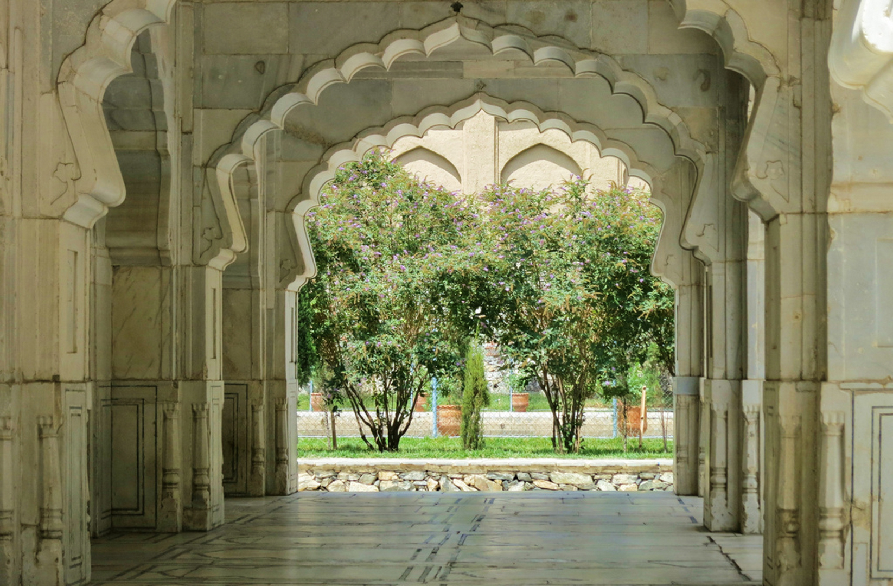
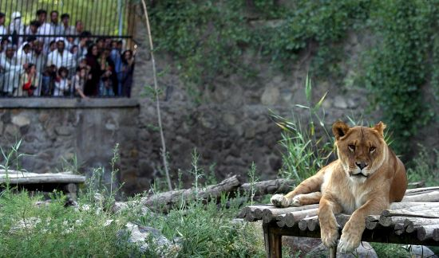

Kabul Afganistan
Kabul is the capital and largest city of Afghanistan, located in a valley surrounded by rugged mountains. It is one of the oldest cities in Central Asia, with a history that stretches back more than 3,500 years. Over centuries, Kabul has been an important stop along trade routes, bringing together different cultures, languages, and traditions. Despite periods of conflict, the city remains a symbol of resilience, where daily life continues through busy bazaars, traditional tea houses, and close-knit neighborhoods. Culturally, Kabul is known as a center of literature, art, and education in Afghanistan. The city has a strong tradition of poetry and music, and places like Babur’s Garden reflect its historical beauty and Mughal heritage. Kabul’s people represent many ethnic groups, which adds to the city’s rich cultural mix.From historic mosques to modern streets, Kabul tells a story of endurance, creativity, and hope for the future. Kabul is the capital and largest city of Afghanistan. It is located in the eastern part of the country and is surrounded by mountains, which give the city a unique and beautiful landscape. Kabul has a history of more than 3,500 years, making it one of the oldest cities in Central Asia.Kabul is the most populated city in Afghanistan, with people from many ethnic groups living together, including Pashtuns, Tajiks, Hazaras, and Uzbeks.
Language
The main languages spoken in Kabul are: Dari (Afghan Persian) most commonly usedPashto Many people, especiallyyounger generations, also understand some English.
Religion
Most people in Kabul are Muslims, mainly Sunni, with a minority of Shia Muslims. Religion plays an important role in daily life and traditions. 

Culture
Kabul has a rich and diverse culture influenced by Central Asian, South Asian, and Middle Eastern
traditions.
Family is very important Resp ect for elders is a key value Traditional clothing is common, but modern clothing is
also worn
Poetry, music, and storytelling are important cultural elements
 

Food
Kabul is famous for its traditional Afghan food, including:
- Kabuli Pulao (rice with meat, carrots, and raisins)
- Mantu (dumplings filled with meat)
- Ashak (leek-filled dumplings)
- Kebabs
- Bolani (stuffed flatbread)
- Green tea drinks
 

Climate
Kabul has a continental climate:Cold winters with snow Warm to hot summersBecause of its high elevation, evenings can be cool even in summer.  
Important Places
- Babur Garden
- Kabul Museum
- Kabul Zoo
- shehr new
- bagh balaa
- Shah-Do Shamshira Mosque


 
Daily Life
Life in Kabul is busy and active. Markets are full of people, fresh food, and local goods.
Despite challenges,
Kabul residents are known for their hospitality, resilience,
and strong community spirit.